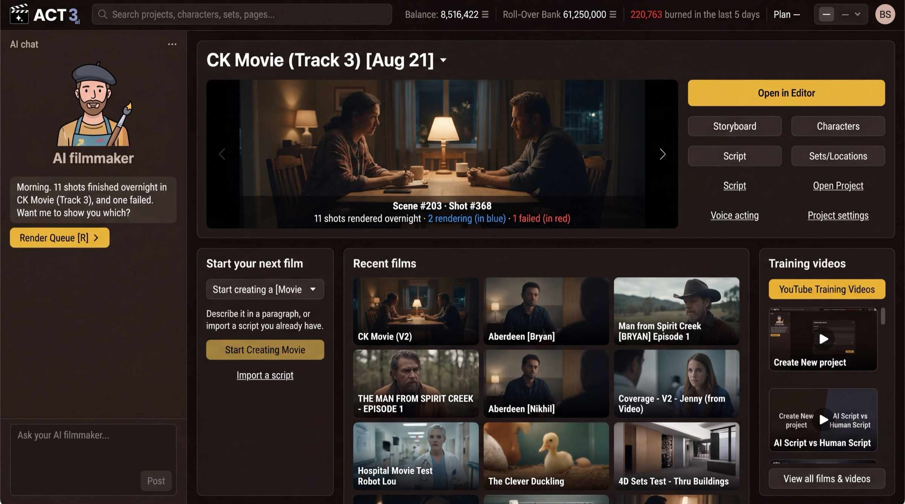

Step 3 of 6
Find your way on Home
Home is where every film starts and where you come back to. The AI filmmaker chat sits on the left; your current film fills the top. Find the Start your next film panel below it.

Start your next filmWhat this page is
Home is the front desk of ACT 3 AI. You will see it every time you sign in. It has four parts:
- The AI filmmaker, the chat column on the left. Ask it anything, in plain words; it can open pages and start work for you.
- Your current film, across the top, with Open in Editor and doors to its Storyboard, Characters, Script and Sets/Locations.
- Start your next film, the panel where every new project begins.
- Recent films and Training videos, to reopen your work or watch a short how-to.
Your first visit looks emptier. The picture shows a filmmaker with many films. On a brand-new account there is no current film and no recent films yet, so Start your next film is the main thing on the page.
On some versions of ACT 3 AI a brand-new account skips Home and opens the New Project wizard straight after sign-up. If that happens to you, jump to step 5, Name your film.
Why you go to Start your next film
Nothing else on Home works until you have a project. A project holds one film: its script, its cast, its shots and its videos. The next step creates it.